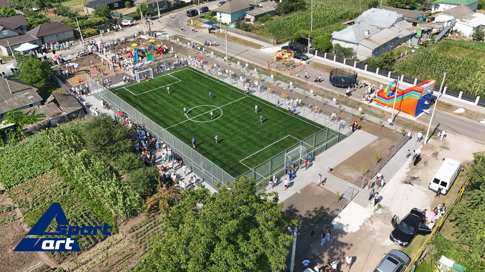

Explorează Colicăuțul
Grădinița "Doinița"
Instituția de educație timpurie “Doinița” este amplasată în centrul satului Colicăuți. A fost
fondată în 1968, cu limba de instruire-română, telefon 0247-42-780. Este unica grădiniță din sat.
IET “Doinița” activează într-o clădire centrală acomodată cu un nivel, proiectată pentru 40 de
locuri, o clădire-tip unită cu cea central, ce are 2 nivele, pentru 50 locuri și clădirea secundară
destinată depozitului de produse alimentare, spălătoriei și cazangeriei autonome. Săptămâna de lucru
este de 5 zile, cu program de lucru de 10,5 ore. /730-1810/ Instituția dispune de 4 grupe și 90 de
locuri.
Angajați – 23, dintre care – 10 cadre didactice (8 educatori, 1 logoped, 1 conducător muzical).
Gimnaziul Colicăuți
Adresa: Republica Moldova, raionul Briceni, com. Colicăuți.
– Anul înființării: 1904;
– Reorganizarea în școală de opt ani: 1962;
– Reorganizarea în școală medie: 1969;
– Reorganizarea în liceu: 2003;
– Reorganizarea în gimnaziu: 2016;
– Limba de instruire: limba română.
Are un contingent de 138 elevi, repartizaţi în 9 complete de clasă.
Ciclul primar – 63 de elevi – 4 complete de clasa,
Ciclul gimnazial – 75 elevi – 5 complete de clasa
Casa de Cultură
Casa de cultură, instituţie tip, cu o capacitate de 500 locuri. Biblioteca activează și este renovată prin proiectul „Novateka” fiind dotată cu sală digitală de calculatoare. În incinta clădirii Casei de Cultură se găzduiește Școala de Arte și Biblioteca satului, inclusiv colectivele model își desfășoara activitatea în această clădire, de asemenea sălile mici sunt utilizate de către localnici pentru petrceerea cumetriilor, zilelor de naștere, meselor de pomenire.
Teren de joacă
Cu mare bucurie, vă prezentăm inaugurarea terenului sportiv din satul Colicăuți, raionul Briceni. Terenul s-a realizat la cheie, după toate standartele europene, folosind gazon certificat FIFA și plasă zincată, producție proprie.